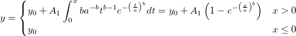

ワイブール累積分布関数
数：4
パラメータの名前:y0, A1, a, b
意味:y0 = offset, A1 = Amplitude, a = Scale, b = Shape
下側境界:A1 > 0.0, a > 0.0, b> 0.0
上側境界:なし
平均: mu=a*gamma(1+1/b)
標準偏差: sigma=a*sqrt( gamma(1+2/b)-(gamma(1+1/b))^2 )
wblcdf(x, a, b)
FITFUNC\WeibullCDF.fdf
統計